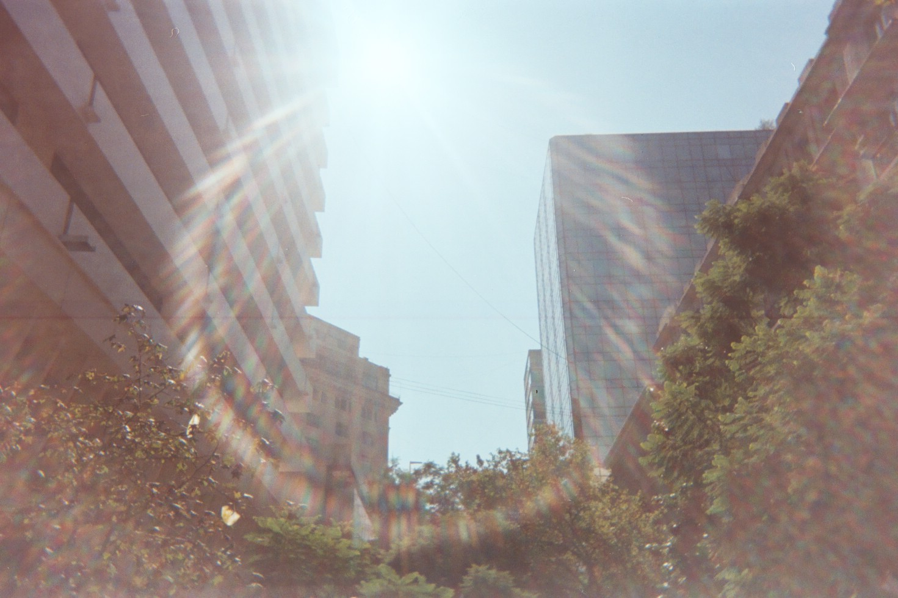
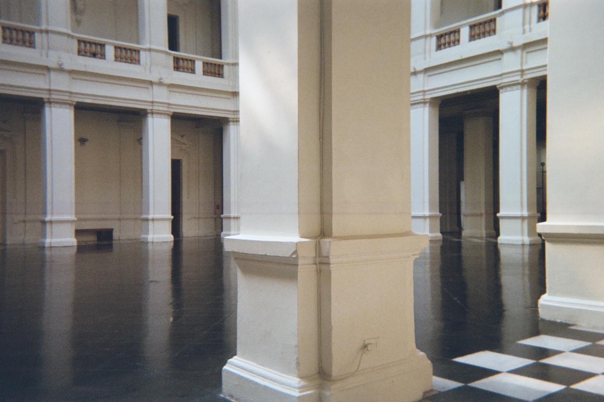
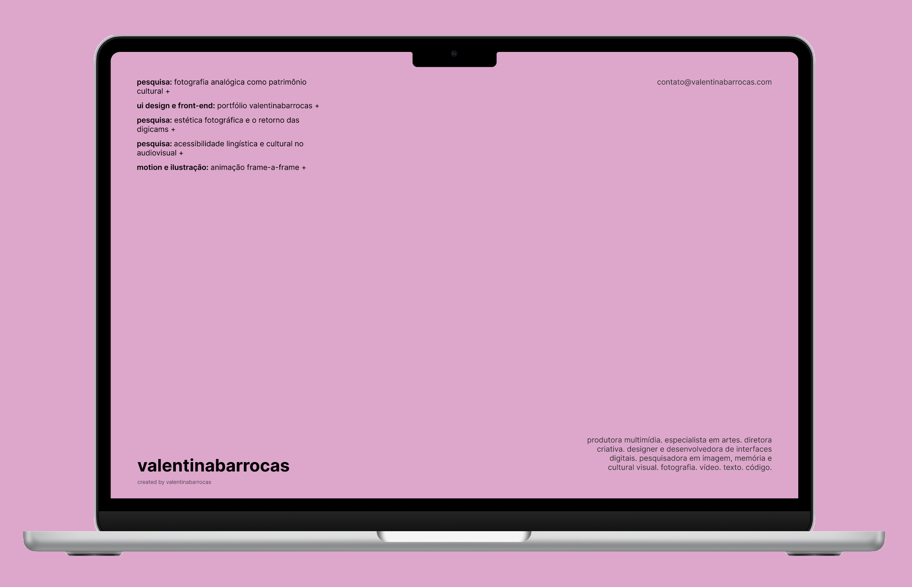

[untitled]
2026
pesquisa de investigação da fotografia analógica como patrimônio cultural imaterial na era digital.
trabalho aceito para apresentação no 9º simpósio científico do icomos brasil.

valentinabarrocas.com
2026portfólio pessoal prototipado no figma e desenvolvido com html, css e javascript. projeto realizado desde a pesquisa até a publicação online.
https://github.com/valentinabarrocas/portfolio

[untitled]
2025pesquisa de análise do fenômeno de retorno da estética fotográfica e de câmeras digitais compactas dos anos 2000 como tendência contemporânea.
[untitled]
2020pesquisa de análise de acessibilidade linguística e cultural para pessoas surdas em produções cinematográficas nacionais em plataforma de streaming.
piano hero
2019
instalação multimídia interativa colaborativa com captação de movimentos e emissão de sons.
exposto na 3ª semana acadêmica de produção multimídia.
[untitled]
2018projeto de animação 2d desenvolvido no photoshop, desenhado à mão, quadro a quadro, utilizando a técnica onion skinning.
produtora multimídia. especialista em artes. diretora criativa. designer e desenvolvedora de interfaces digitais. pesquisadora em imagem, memória e cultura visual. fotografia. vídeo. texto. código.